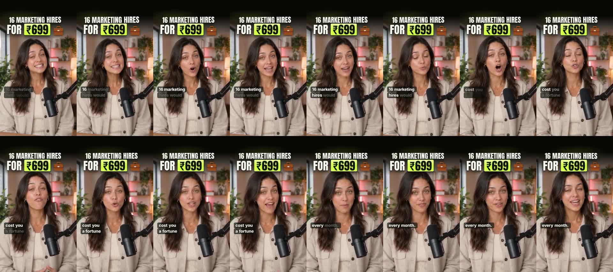
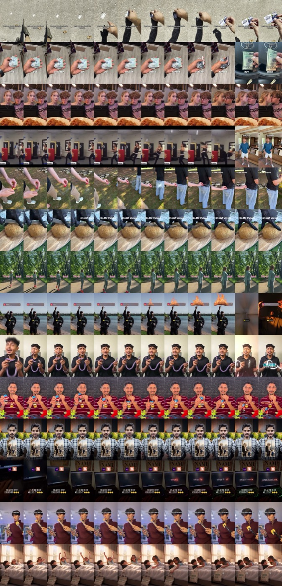

ViralFrames · Headcount AI · Meta Reels · Round 3 · 15 Nov 2026
20 new storyboards, rebuilt from the hook up
Ten for each product. Every one opens with a viral-style clip and an emoji hook, teaches or shows something real, uses real recordings of the product, and is voiced in one continuous take. Pick the ones you want built.
What went wrong last round
1The voice broke because of how I stitched it. I recorded each ad in one take, cut it into sentences, then spaced them back out with fixed pauses. In VF-01, 11 of the 14 cuts sliced off the end of a word. Your live e-com agents reel never pauses longer than 0.2 s between words.
2The motion was a slideshow. One flat card at a time on a dark background, with nothing carrying you from one idea to the next.
3The product was rebuilt as mockups instead of being shown working for real.
4The hooks were statements, the first 3 seconds had nothing to stop a thumb, and every ad looked like an ad.
The new playbook
Voice
Each beat is recorded as one whole paragraph and never cut. Beats join back to back, each generated with the lines before and after it as context, so the delivery flows. The film plays at 1.15x like your live reel. Gate: no pause over 0.35 s inside a sentence, measured on the final file, plus a full listen.
First 3 seconds
A viral-style AI clip (a near-miss, a fail, a reaction, something satisfying) with a bold emoji hook on screen from frame 1 and the first word spoken by 0.3 s. One line ties the clip to the viewer's problem, and a match cut carries it straight into the product.
Content, not an ad
Every film is worth watching on its own: a money teardown, a checklist, a timed demo, a rating, an unboxing, a day in the life. The product arrives about a third of the way in as the way to do it. The CTA sounds like a creator: "Tap below".
The real product
Real runs, captured as they happen: Claude desktop making a real ViralFrames video, real Headcount AI agent runs and real setup. Then enhanced: mapped onto floating 3D screens, camera push-ins, highlight boxes locked to the real buttons, speed ramps. Site assets (bonus mockups, agent cards, guides) are re-rendered large in 3D.
Motion, fully loaded
One continuous 3D world per film and a camera that never stops. Match cuts out of the AI clip (the skateboard freeze shatters into an editing timeline). Extruded type on depth planes, paper, glass and liquid transitions, light sweeps and particle hits on prices, word-pop captions like your live reel, and reaction bubbles.
Music, length, checks
Peppy, modern Instagram-style beds (118 to 128 BPM) with the drop on the hook-to-body join, voice always on top. Films run 50 to 58 s. Before you see anything: the voice-gap check, a freeze check (nothing still over 1 s while the voice talks), every frame read on contact sheets, prices and spelling, and the first 3 seconds judged on their own.
Voice: pick by ear
Each sample is three beats, made the new way: whole paragraphs, never cut, joined back to back and played at 1.15x. Paul is the voice on your live e-com agents reel.
What we are taking from your live e-com agents reel
Faceless reel, first 4 seconds: the hook block is on screen from frame 1, with an emoji, and the words light up as they are spoken.

Presenter reel, first 4 seconds: a person on camera, a price hook with an emoji, and captions in the lower middle.
We keep: the hook block from frame 1, word-pop captions, a voice that never stops, a real chat window doing a real job, bonuses around the CTA, and "the link is just below". We add: a viral visual hook before the product, a moving 3D world instead of flat panels, and real recordings instead of rebuilt mockups.
What 77 viral reels taught us
I pulled 77 high-performing organic reels and TikToks (AI tools, Claude and ChatGPT tips, D2C and founder content, b-roll openers) and read the first 3 seconds of each frame by frame. The full table with links is in research/HOOKS.md. Each storyboard below links the real reels its hook is modelled on.
Visual hooks that hold
Near-miss clips cut just before the payoff. Fake-out objects (a "dropped dollar" that is a business card, 9.76M views). Proof first: the finished result on screen within 2 seconds (6.67M). "This video was made by AI": the reel is its own demo (2.31M). POV founder skits (1.51M on 4.7K followers). A phone notification that carries the hook (2.34M on 19K).
Text hooks that read as content
"Screenshot This 💀 (Before it Goes Away Forever)" hit 60.2M plays. "CLAUDE JUST KILLED IT 😮💨" did 126x its followers. "Claude just killed marketing agencies" (892K) makes almost exactly the Headcount AI claim. "deleting capcut after this", in plain lowercase, did 174x. The emoji that recur on screen: 😳 💀 🤯 😮💨 🚨.
Why they don't feel like ads
They teach, test, rate or show something first; the tool arrives as the way to do it. Plain small white text reads the least like an ad, so every board also gets one plain-text hook variant for testing. Captions end with 👇, and the ask sounds like a creator.
One rule for paid ads
Several viral openers borrow someone else's clip. We never do that: every opener here is generated fresh (AI video) or made by us, so the ads are safe to run.

First 3 seconds of 14 of the strongest visual hooks from the research (4 frames a second, left to right).
The 20 storyboards
Badges: AI = an AI video clip (the still is its key frame). REAL = a real ViralFrames output or real product content. SITE = a sharp 2x to 4x re-capture of the product animation on your landing page, shown as it will be treated (a floating 3D screen); in the build they sit next to real runs captured in my own session. Riya and Meera are AI-generated people: they only react and never claim results. Real-brand site examples appear only as small tiles. Every product number shown in a UI is tagged "Example".
After you pick
1Pick any number from each product with the buttons, then press Copy picks and paste them to me. Tell me the voice and any hook you want swapped in.
2I generate the hook clips, make fresh ViralFrames outputs for each picked board, and capture the product: real ViralFrames runs done in my own session (the real prompt, the real steps and timings, the real finished video, shown sped up with a note), plus the sharp site captures shown here. If Screen Recording is on for the Claude app at build time, I record true screen video instead. No agent that posts, sends or spends is ever run live.
3I build your top pick for each product first and send both, so you can check the voice and the motion before I build the rest.
4Then the rest, in parallel, each through the same checks before it reaches you.